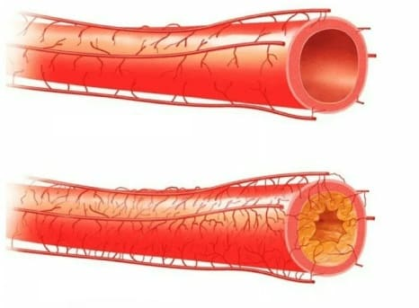
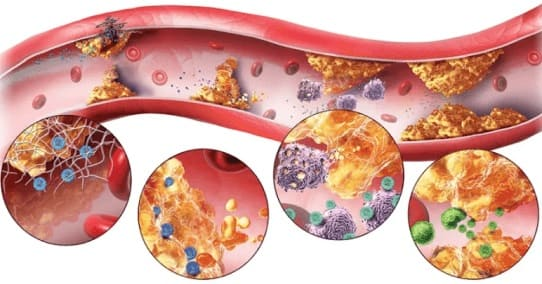
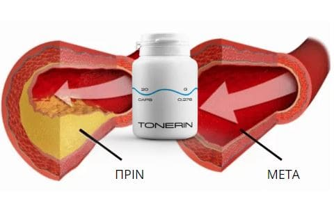

«... στην εποχή μας, δεν μπορούν όλοι να επιτρέψουν οικονομικά στον εαυτό τους, ένα
ακριβό προϊόν υγείας. Μπορώ να πω με σιγουριά, ότι δεν υπάρχουν ανάλογα αυτού του προϊόντος αυτή τη
στιγμή ».
Το μυστικό της μακροζωίας του 70-χρονου ειδικός στην καρδιολογία, καθηγητή Hugo A. Katus
Έχοντας γιορτάσει τα 70α γενέθλιά του με μεγάλη γιορτή , ο ειδικός στην
υγεία της καρδιάς Hugo A. Katus μοιράστηκε με τους συντάκτες μας το μυστικό της υγείας και της
μακροζωίας του.
Hugo A. Katus, ισχυρίζεται ότι το ανθρώπινο σώμα έχει σχεδιαστεί για
120-150 χρόνια ζωής και μπορούμε να φτάσουμε σε αυτούς τους αριθμούς εάν έχουμε υγιή τα αιμοφόρα
αγγεία μας.
-Ρωτήσαμε τον Hugo A. Katus, πώς να διατηρήσουμε τα αιμοφόρα αγγεία υγιή μέχρι τα βαθιά
γεράματα.
- Τα αγγεία μας είναι υπεύθυνα για την παροχή του αίματος σε όλα τα όργανά μας και τους ιστούς
μας. Η καρδιά – είναι ο κινητήρας, και τα αγγεία – είναι « τα κανάλια της ζωής ». Το πόσο καλά
τροφοδοτούνται τα όργανά μας, θα καθορίσει πόσο καλά και για πόσο καιρό θα λειτουργούν. Πρέπει
να επισημάνουμε, ότι το καρδιαγγειακό σύστημα είναι το πιο σημαντικό σύστημα του σώματός μας.
Μια καλή παροχή αίματος εξασφαλίζει, όχι μόνο υγεία, αλλά και ομορφιά. Υψηλής ποιότητας δέρμα,
υγιής χροιά, δυνατά μαλλιά, όμορφα πόδια (χωρίς κιρσούς), όλα αυτά είναι το αποτέλεσμα καλής
παροχής του αίματος, όμορφα πόδια χωρίς κιρσούς είναι το αποτέλεσμα καλής παροχής του αίματος.
Κατά την διάρκεια της ζωής, τα αγγεία «βουλώνουν», φράζουν, όπως οι σωλήνες στο μπάνιο
σας. Στην αρχή είναι ολοκαίνουργια, το νερό μπαίνει καλά και είναι καθαρό, χωρίς ακαθαρσίες.
Αλλά κοιτάξτε τους σωλήνες, μετά από 50 ή 70 χρόνια. Πώς σας φαίνεται η κατάστασή τους;
Φανταστείτε ότι το ίδιο συμβαίνει με τα αγγεία σας. Η μόνη διαφορά είναι ότι ανάβετε το νερό
μόνο περιστασιακά και η καρδιά μεταφέρει αίμα στα αγγεία 24 ώρες το 24 ωρο.

Κανονικά αγγείαΑθηροσκλήρωση
- Γιατί τα δικά μας αγγεία βουλώνουν τόσο πολύ και μπορεί με κάποιον τρόπο να
αποφευχθεί
αυτό;
- Φυσικά, ο τρόπος της ζωής μας είναι ένας πολύ σημαντικός παράγοντας της υγείας των αγγείων
μας. Το αλκοόλ, τα τσιγάρα, το πρόχειρο φαγητό, συμβάλλουν σε ένα πολύ γρήγορο φράξιμο των
αιμοφόρων αγγείων. Αντίθετα, οι περίπατοι στον καθαρό αέρα, μια σωστά επιλεγμένη διατροφή, τους
επιτρέπουν να παραμείνουν υγιείς για περισσότερο χρονικό διάστημα.
Ας είμαστε όμως
ειλικρινείς με τον εαυτό μας. Είστε έτοιμοι να περπατήσετε για μερικές ώρες κάθε μέρα και να
εγκαταλείψετε ένα άνετο αυτοκίνητο; Είστε έτοιμοι να ζήσετε χωρίς να επιτρέψετε ποτέ στον εαυτό
σας κουλούρι, λουκάνικο ή τυρί; Είστε έτοιμοι να ξεχάσετε τη μεθυστική διασκέδαση για μια ζωή;
Λοιπόν, τότε θα θέλετε να πάτε στο νεκροταφείο πριν βουλώσουν τα αγγεία σας (γέλια).

Η διαδικασία συσσώρευσης επιβλαβών εναποθέσεων και ακαθαρσιών στα αγγεία.
- Σε τι οδηγούν τα βρώμικα αγγεία;?
- Θα σας πω τις κύριες ασθένειες, για παράδειγμα, όπως π.χ.
Αθηροσκλήρωση
- ο σχηματισμός πλάκας στα τοιχώματα των αρτηριών, η οποία μπορεί να οδηγήσει με τη
σειρά της
σε καρδιακή προσβολή, εγκεφαλικό επεισόδιο, νεφρική ανεπάρκεια.
Στεφανιαία νόσος – μειωμένη ροή του αίματος, η οποία οδηγεί σε
δυσλειτουργία της καρδιάς.
Εγκεφαλικό – παραβίαση της παροχής του αίματος στον εγκέφαλο,
προκαλείται
από την απόφραξη των αιμοφόρων αγγείων.
Κιρσοί –αύξηση του μεγέθους των φλεβών στα πόδια και σε ορισμένα
εσωτερικά
όργανα
Θρόμβωση (φλεβική και αρτηριακή) – απόφραξη των αιμοφόρων αγγείων, που
συχνά οδηγεί στο θάνατο του ασθενούς.
Υπέρταση – αυξημένη αρτηριακή πίεση - λόγω στένωσης του αυλού των
αιμοφόρων
αγγείων. Οδηγεί σε εγκεφαλικό επεισόδιο.
Η διαδικασία συσσώρευσης επιβλαβών εναποθέσεων και ακαθαρσιών στα αγγεία.
Η διαδικασία συσσώρευσης επιβλαβών εναποθέσεων και ακαθαρσιών στα αγγεία.
- Τι κάνουμε, λοιπόν, με τα αγγεία μας; Πώς καθαρίζονται;
- - Το πρόβλημα των καρδιαγγειακών παθήσεων τώρα πιο επίκαιρο από ποτέ. Μαζί με την πρόοδο,
αρχίσαμε να κινούμαστε λιγότερο. Τρώμε γρήγορο φαγητό, το οποίο δεν μαγειρεύουμε πάντα στο
σπίτι, πηγαίνουμε με το αυτοκίνητο, σπάνια περπατάμε, δεν κοιμόμαστε πολύ, προσπαθώντας να
κάνουμε τα πάντα εγκαίρως. Ως αποτέλεσμα, το άγχος, το καθισιό και το πρόχειρο φαγητό προκαλούν
όλο και περισσότερους, νέους ανθρώπους να πεθαίνουν από τις αγγειακές παθήσεις.
Ως εκ
τούτου, επιμένω ότι τουλάχιστον μία φορά το χρόνο, είναι απαραίτητο να υποβληθείτε σε διαδικασία
καθαρισμού των αιμοφόρων αγγείων. Διαφορετικά, μέχρι την ηλικία των 50 ετών, τα αιμοφόρα αγγεία
σας, για να το θέσουμε ήπια, θα αφήσουν πολλά για ενθύμιο. Επομένως, ήδη από την ηλικία των 30
ετών, πρέπει να αρχίσετε να σκέφτεστε το μέλλον σας και να φροντίσετε τα αγγεία σας.
- Πώς καταλαβαίνετε ότι έχετε προβλήματα με τα αιμοφόρα αγγεία;?
- Θα έλεγα έτσι: Εάν είστε 35 ετών και δεν είστε γιόγκι, που ζείτε στο Θιβέτ, τότε έχετε βρώμικα
αγγεία. Θα προσθέσω σε αυτό τα κύρια σημάδια, όπως:
Η πίεση είναι μεγαλύτερη από 120 έως 80
Πονοκέφαλοι
Χλωμό δέρμα
Δυσκολία στον ύπνο ή στο ξύπνημα
Χρόνια κόπωση
Παραβίαση της ισχύος στους άνδρες
Προβλήματα μνήμης
Μειωμένη οπτική οξύτητα
Πόνος στις αρθρώσεις
Τα συμπτώματα δεν είναι σπάνια, αλλά όλοι πιστεύουμε ότι "όλοι είναι
έτσι" ή ότι "αυτό είναι φυσιολογικό". Αυτό όμως δεν είναι αλήθεια. Ακόμα κι αν έχετε τουλάχιστον
ένα από τα αναφερόμενα συμπτώματα, αυτό είναι ήδη ένα σήμα ότι ήρθε η ώρα να καθαρίσετε τα
αγγεία. Όσο πιο γρήγορα ξεκινήσετε την πρόληψη, τόσο το καλύτερο για εσάς.
- Με ποιον τρόπο καθαρίζουν τα αγγεία; Αναφέρατε κάποιες ειδικές διαδικασίες.
- Όχι ακριβώς διαδικασίες, αλλά χρήση φυσικών θεραπειών που βοηθούν στον καθαρισμό των αιμοφόρων
αγγείων. Τελευταία συνιστώ στους ασθενείς μου ένα νέο και αποτελεσματικό προϊόν, που ονομάζεται
. Το προτείνω, γιατί είναι εντελώς φυσικό και έχει υπέροχη, μοναδική σύνθεση. Δεν
χρειάζεται πλέον να ψάχνετε ξεχωριστά το κάθε συστατικό. Το συγκεντρώνει την αρχαία
γνώση και τη δύναμη της επιστήμης. Έτσι, τώρα έχουμε ένα εξαιρετικό προϊόν για τον βοηθά στον
καθαρισμό των αιμοφόρων αγγείων και σε πολύ λογική τιμή. Αυτό είναι πολύ σημαντικό, γιατί στις
μέρες μας δεν μπορούν όλοι να επιτρέψουν οικονομικά στον εαυτό τους ένα ακριβό προϊόν. Μπορώ να
το πω με σιγουριά δεν υπάρχουν ανάλογα με αυτό το προϊόν αυτή τη στιγμή.
Μια έρευνα που
πραγματοποιήθηκαν με βάση τα δεδομένα, που συλλέχθηκαν από 2000 εθελοντές που χρησιμοποίησαν
έδειξαν τα εξής:
Ομαλοποίηση της αρτηριακής πίεσης97%
Βελτίωση της γενικής κατάστασης99,5%
Ομαλοποίηση του καρδιακού ρυθμού100%
Χωρίς παρενέργειες100%
Καθαρισμός των αιμοφόρων αγγείων από τη χοληστερόλη98%

Το βοηθά καθαρίζει πλήρως, ακόμη και τα πιο βουλωμένα αγγεία σε 1 μήνα
- Πού μπορείτε να αγοράσετε αυτό το προϊόν;
- Η εταιρεία - ο κατασκευαστής του καθιστά δυνατή την παραγγελία του προϊόντος,
απευθείας στον επίσημο ιστότοπό τους.
Τώρα παρέχεται έκπτωση
50%, γι'αυτό έως τις θα μπορέσετε να αποκτήσετε το σε ακόμη καλύτερη τιμή.
ΠΕΡΙΣΣΟΤΕΡΑ ΓΙΑ ΤΟ ΠΩΣ ΝΑ ΛΑΒΕΤΕ ΤΟ ΜΕ ΠΑΡΑΔΟΣΗ.
ΓΙΑ ΝΑ
ΠΑΡΑΓΓΕΙΛΕΤΕ ΤΟ ΧΡΕΙΑΖΕΤΑΙ:
ΣΥΜΠΛΗΡΩΣΤΕ ΤΗ ΦΟΡΜΑ ΣΤΗΝ ΕΠΙΣΗΜΗ ΙΣΤΟΣΕΛΙΔΑ.
Ο ΕΚΠΡΟΣΩΠΟΣ ΜΑΣ ΘΑ ΕΠΙΚΟΙΝΩΝΗΣΕΙ ΜΑΖΙ ΣΑΣ ΓΙΑ ΕΠΙΒΕΒΑΙΩΣΗ ΤΗΣ ΔΙΕΥΘΥΝΣΗΣ ΠΑΡΑΔΟΣΗΣ
Επαναλαμβάνετε τη διαδικασία καθαρισμού των αγγείων κάθε χρόνο, εάν είστε άνω των 30
ετών. Θυμηθείτε ότι, οποιαδήποτε πρόληψη είναι πάντα καλύτερη από τη θεραπεία. Φροντίστε τον
εαυτό σας και μην ξεχνάτε τα αγγεία σας!
- Κύριε Hugo A. Katus, σας ευχαριστώ για τόσο ενδιαφέρουσες πληροφορίες! Να ζήσετε πολλά χρόνια!
: Σημαντικό! Λόγω του μεγάλου αριθμού αιτημάτων, αναγκαζόμαστε να περιορίσουμε τη διάρκεια
αυτής
της προσφοράς. Η τρέχουσα προσφορά θα διαρκέσει μέχρι και τις .
Ευχαριστώ τον γιατρό για την τόσο λεπτομερή
απάντηση! Έκανα παραγγελία
Χριστίνα
Τώρα τα φάρμακα κοστίζουν μια περιουσία και μηδενικό
αποτέλεσμα! Είναι τόσο ωραίο να βρίσκεις ένα φθηνό και φυσικό προϊόν.
Ιωάννης
Είμαι καρδιολόγος και ξέρω πόσο σημαντικός είναι ο
καθαρισμός των αγγείων, από πρώτο χέρι. Τελευταία, συνταγογραφώ σε ασθενείς μόνο το
.
Σεβαστή
Αυτή την υπέροχη θεραπεία μου την πρότεινε ο γαμπρός
μου, είναι επίσης γιατρός. Το προϊόν αυτό, το χρησιμοποιώ εδώ και ένα μήνα και νιώθω
πολύ καλύτερα. Νιώθω ένα κύμα δύναμης και επιθυμίας να κάνω κάτι. Η αρτηριακή πίεση
επανήλθε στο φυσιολογικό.
Μαρία
Δεν έχω πλέον τη δύναμη να αντέξω αυτές τις αυξήσεις
πίεσης. Χαίρομαι που ανακάλυψα την αιτία. Παρήγγειλα 2 συσκευασίες, στον εαυτό μου
και στην αδερφή μου. Ελπίζω να επιστρέψω ξανά στη γυμναστική.
Αντρέας
Παίρνω αρκετό καιρό, για να καθαριστούν τα
αιμοφόρα αγγεία μου. Κάθε χρόνο κάνω μια πλήρη εξέταση, οι γιατροί εκπλήσσονται από
την εξαιρετική κατάσταση των αιμοφόρων αγγείων μου.
Ελένη
Η παραγγελία ήρθε,
όλα είναι καλά συσκευασμένα, περιμέναμε μόνο 2 ημέρες. Ευχαριστώ!
Ειρήνη
Θα πρέπει να παραγγείλουμε αμέσως, εκπτώσεις στο
site!
Μαριάννα
Αγόρασα πριν από έξι μήνες, αλλά, δυστυχώς, καμία έκπτωση. Η αρτηριακή πίεση και ο
παλμός επέστρεψαν στο φυσιολογικό. Γενικά, η κατάσταση της υγείας έχει αλλάξει προς
το καλύτερο. Ακόμα και ο σύζυγός μου, παρατήρησε ότι ήμουν πιο όμορφη. Ολόκληρο το
σώμα φάνηκε να επανήλθε στο φυσιολογικό. Θα παραγγείλω μερικά τεμάχια με έκπτωση.
Επιπλέον, ο σύζυγος θέλει επίσης να αρχίσει τη θεραπεία.
Αντώνης
Πρόσφατα διάβασα πολλά άρθρα για βρώμικα αγγεία.
Είναι καλό που υπάρχει μια τέτοια αποτελεσματικό και φυσικό προϊόν. Ας ελπίσουμε ότι
με αυτό θα μπορούμε να ζήσουμε περισσότερο
Γιάννα
Έκανα παραγγελία, ανυπομονώ!
Χριστίνα
Θα παραγγείλω για την γιαγιά, είναι ήδη 94 ετών.
Θέλω να ζήσει πολύ, πολύ!
Νίκος
Μόλις άρχισα να παίρνω το , η "οικεία σφαίρα"
έλαμψε με νέα χρώματα. Μπορώ να κάνω τα πάντα τώρα!
Βασιλική
ναι, σίγουρα δεν θα βλάψει όλους μας να καθαρίσουμε
τα αιμοφόρα αγγεία από τη χοληστερόλη. Πάω να παραγγείλω.
 ΑΓΑΠΗΜΕΝΑ
ΑΓΑΠΗΜΕΝΑ